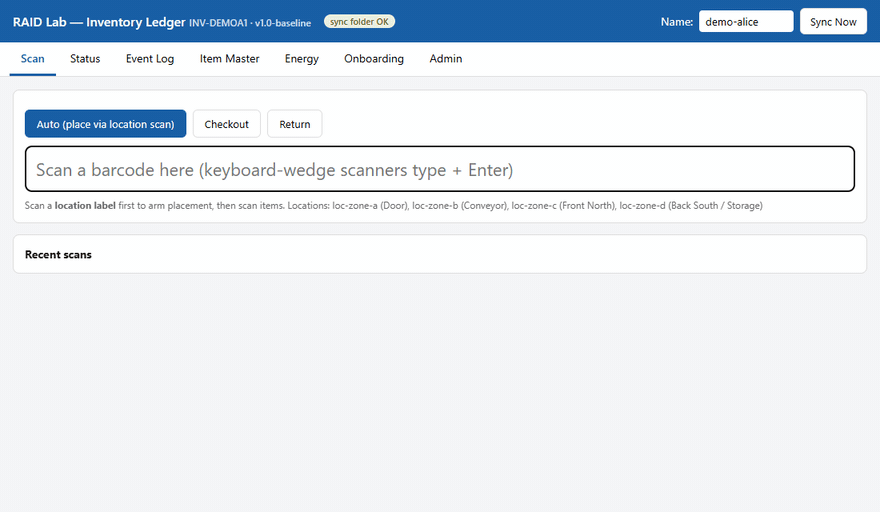
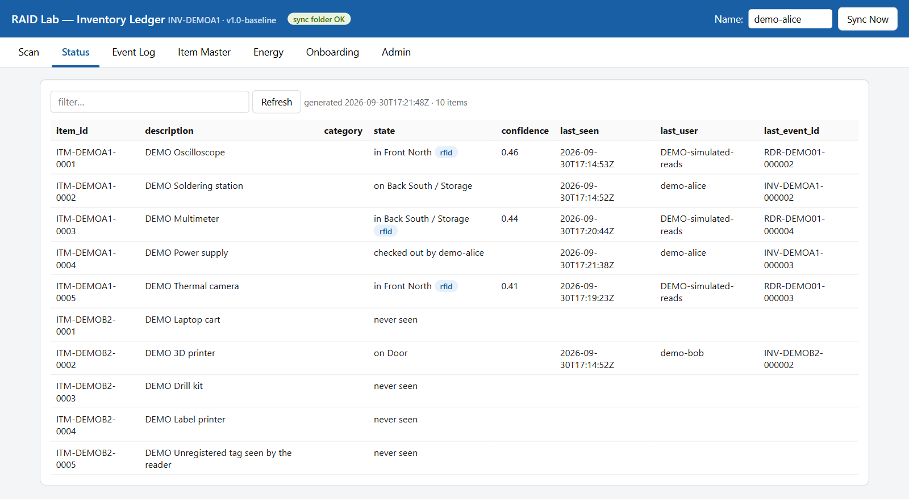

Lab Inventory Control Database
Students are building the lab's own system for tracking equipment and supplies, from shelf labels and barcode scans to where each item is now.
- Active
- 2025–present
- RFID and Auto-ID
- Inventory
- Digital twins
- Operations

In plain English
A research lab runs on hundreds of small things: tools, tags, cables, consumables and shared equipment. When no one knows what is on hand or where it is kept, time goes into searching and reordering. This project builds the SEAR Lab's own inventory system and uses the lab as a test site for the asset-tracking problems studied in the RFID and Auto-ID Deployment (RAID) Laboratory.
Students are counting what the lab holds, organizing shelves with the 5S method (sort, set in order, shine, standardize, sustain), and labeling shelves and items with standard GS1 identifiers. A simple program records each placement, check-out and return as a new line in a log, and works out from that log where each item is and who has it. Because items share identifiers with the lab's RFID and energy-monitoring work, a tag read can be tied to the same item record as a barcode scan. The current version runs on a laptop with nothing to install and keeps several laptops in step through a shared folder.
Main points
- The item master lists what the lab owns; any station can add an item, and every change records which station made it.
- Scanning a shelf label and then an item barcode records a move, check-out or return in a log that is added to but never edited.
- Each item's status (where it was last placed or seen, or who has it checked out) is recomputed from that log rather than typed in.
- Items carry GS1 identifiers (a GTIN for each kind of item and a GIAI for each tracked asset), so RFID reads join the same records.
- The physical inventory follows the 5S method, with a scored audit of each area of the lab.

Papers, code and materials
People
- Erick C. Jones Jr., PhD, PEPrincipal Investigator · SEAR Lab directorin
Fall 2026 team: names to be added from the lab personnel sheet. Profiles marked in link to LinkedIn. More past and present lab members are on the SEAR Lab team page.